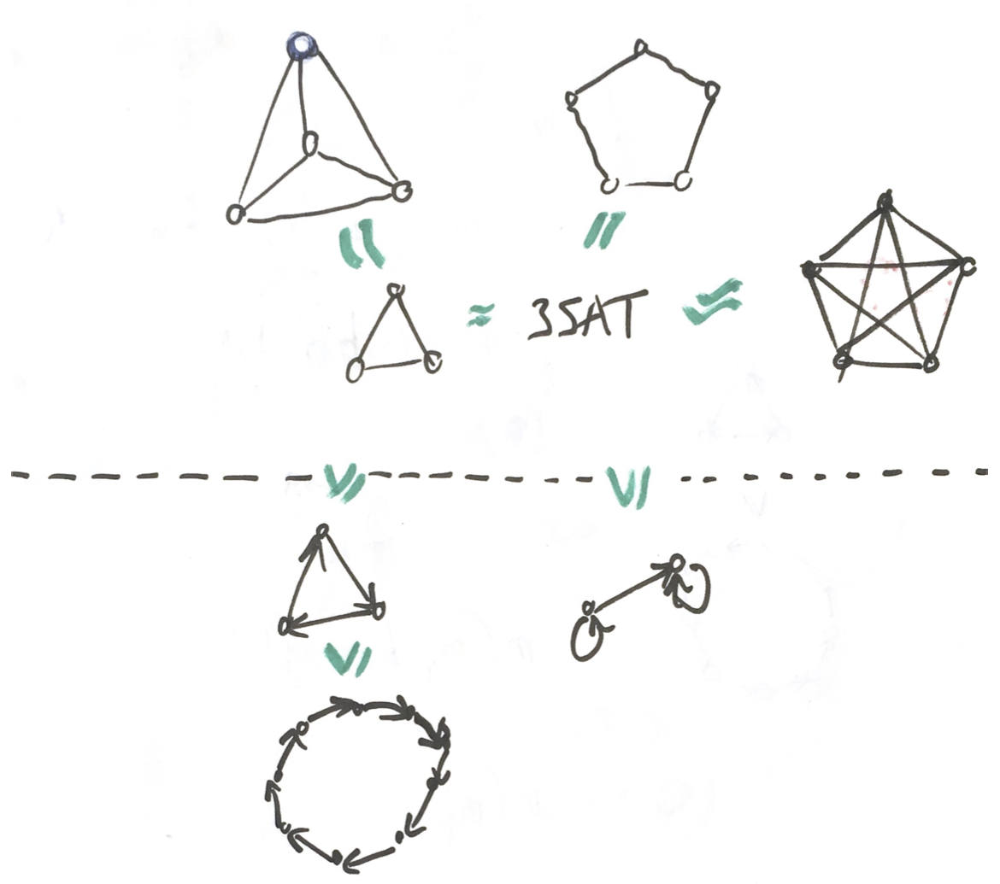
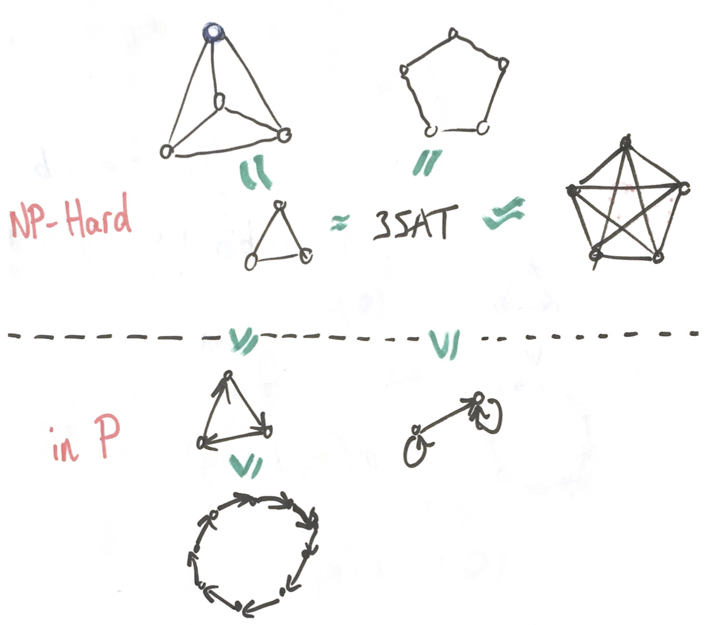

Input: variables $V$, tuples $((z_1,\dots,z_k),T)$ where $T\,\color{red}{\in \{R_1,\dots,R_p\}}$
Question: $\exists h\colon V\to D$ s.t.
$(h(z_1),\dots,h(z_k))\in T$ for every constraint?
Complexity depends on $\Bbb A=(D;R_1,\dots,R_p)$ ($s$-$t$ reachability in NL, $k$-colourability is NP-hard)
$\Csp($$)$ is NP-hardin PNP-hardin PNP-hardNP-hard
If $D$ allowed to be infinite, every problem is polytime Turing-equivalent to a CSP. [Bodirsky-Grohe '08]
When is $\Csp(D; R_1, \dots, R_p)$ in P? NP-hard? undecidable? ...
What this talk is not about:
Efficient implementations of polytime algorithms,
Efficient algorithms for NP-hard problems (SAT solvers, constraint solvers, ...)
Why is $\Csp(D; R_1, \dots, R_p)$ in P? NP-hard? undecidable? ...
While there is an infinite range of complexity classes, problems occurring in practice [are] complete for a handful of them.
I used to say that no one knows why this happens. Now however I can say that it happens for an algebraic reason which [CSP people] are close to figuring out.
Show that $\Csp(\{{\color{red}{\bullet}},{\color{green}{\bullet}},{\color{blue}{\bullet}},{\color{purple}{\bullet}},{\color{magenta}{\bullet}}\}, E)$ is NP-hard.
Invariant 2
If $R$ is pp-definable in $\Bbb A$, then $\Csp(\Bbb A,R)$ and $\Csp(\Bbb A)$ have the same complexity.
Show that $\Bbb A=(\{{\color{vermillion}{\bullet}},{\color{green}{\bullet}},{\color{blueish}{\bullet}}\}$,
)
can define
Summarizing: The Ultimate Invariant?
pp-constructions
$\Bbb B$ is pp-constructible in $\Bbb A$ if there exists $\Bbb C$ such that:
$\Bbb C=(A^n; R_1,\dots,R_p)$ and each $R_i$ is pp-definable in $\Bbb A$,
$\Bbb B$ and $\Bbb C$ satisfy the same pp-sentences.
Invariant
If $\Bbb B$ is pp-constructible in $\Bbb A$, then $\Csp(\Bbb B)$ reduces to $\Csp(\Bbb A)$.

Conclusion
A quasi-order $\leq_{pp}$ such that $\Bbb A\leq_{pp} \Bbb B \Rightarrow \Csp(\Bbb A)\leq_{log} \Csp(\Bbb B)$.
If 3-SAT $\leq_{pp} \Bbb A$, then $\Csp(\Bbb A)$ is NP-hard.
It is feasible to prove $\Bbb A\not\leq_{pp}\Bbb B$ (contrast with $\not\leq_{\log}$).
Theorem [Bulatov '17, Zhuk '17]
If $\Bbb A$ is finite and 3-SAT $\not\leq_{pp}\Bbb A$, then $\Csp(\Bbb A)$ is in P.
When $\Bbb A$ is finite, there is a unique source of hardness!

Warm up
Exercise
Is there an fo-formula $\phi(x)$ (using $=$ and $E$) s.t. $\phi(x)$ iff $x=\color{magenta}{\bullet}$?
Automorphism
$f\colon\Bbb A\to\Bbb A$ automorphism if it is a bijection and $\forall R^{\Bbb A}$ and $\forall (a_1,\dots,a_k),$
\[(a_1,\dots,a_k)\in R^{\Bbb A}\Leftrightarrow (f(a_1),\dots,f(a_k))\in R^{\Bbb A}\]
Fact: for every formula $\phi(x_1,\dots,x_k)$ and automorphism $f$,
\[ \Bbb A\models\phi(a_1,\dots,a_k)\Leftrightarrow \Bbb A\models\phi(f(a_1),\dots,f(a_k))\]
Idea: turn negative statement (non-existence of a formula) into equivalent positive statement (existence of a particular automorphism)
For every pp-formula $\phi(x_1,\dots,x_k)$ and $\underline{a^1},\dots,\underline{a^n}$,
if $\phi(\underline{a^1}),\dots,\phi(\underline{a^n})$, then $\phi(f(\underline{a^1},\dots,\underline{a^n}))$.
Let $\Bbb A$ be a finite structure.
Arc-consistency solves $\Csp(\Bbb A)$ if and only if for all $n$, $\Bbb A$ has an $n$-ary totally symmetric polymorphism.
Datalog
Fragment of fixpoint first-order logic
Programs "Instance of $\Csp(\Bbb A)$" $\mapsto$ implied constraints
Evaluation of a fixed Datalog program/formula is in P.
Theorem
Let $\Bbb A$ be a finite structure.
Datalog solves $\Csp(\Bbb A)$ if and only if $\Bbb A$ has polymorphisms $f,g$ satisfying
\[ \begin{align*}f(x,x,y)&=f(x,y,x)=f(y,x,x)\\g(x,x,x,y)&=g(x,x,y,x)=g(x,y,x,x)=g(y,x,x,x)\\f(x,x,y)&=g(x,x,x,y).\end{align*}\]
Conclusion
Proving hardness by relational/combinatorial arguments, works for all structures.
$\rightarrow$ pp-constructibility.
Proving non-pp-constructibility by algebraic arguments, works for finite structures.
$\rightarrow$ polymorphisms.
Algorithms:
Use polymorphisms to design algorithms.
Characterise the power of algorithms by polymorphism conditions.
Meta-argument: the polymorphic principle
Given a problem that one can solve non-deterministically.
Look at the "space of guesses/solutions",
Does it have non-trivial symmetries? $\approx$ polymorphisms
If yes, there is a better, deterministic algorithm.
The CSP galaxy
Infinite-Domain CSPs
Why?
Covers more decision problems than finite-domain CSPs (linear programming, digraph acyclicity, mean-payoff games, ...)
Hope for a more systematic understanding of complexity theory via algebra
What changes?
Still doing pp-constructions to prove NP-hardness
The connection with polymorphisms breaks down
Many pathological cases
2 main research directions: numeric CSPs and $\omega$-categorical CSPs.
$\omega$-categoricity
Automorphism
$f\colon\Bbb A\to\Bbb A$ automorphism if it is a bijection and $\forall R^{\Bbb A}$ and $\forall (a_1,\dots,a_k),$
\[(a_1,\dots,a_k)\in R^{\Bbb A}\Leftrightarrow (f(a_1),\dots,f(a_k))\in R^{\Bbb A}\]
$\Bbb A$ is $\omega$-categorical if $\sim$ has finite index (finitely many orbits) for all $n$.
Automorphism
$f\colon\Bbb A\to\Bbb A$ automorphism if it is a bijection and $\forall R^{\Bbb A}$ and $\forall (a_1,\dots,a_k),$
\[(a_1,\dots,a_k)\in R^{\Bbb A}\Leftrightarrow (f(a_1),\dots,f(a_k))\in R^{\Bbb A}\]
Let $\Bbb A$ be a reduct of a homogeneous finitely bounded structure.
If 3-SAT $\not\leq_{pp} \Bbb A$, then $\Csp(\Bbb A)$ is in P.
A lot of evidence that the conjecture is true,
Many technical obstacles with interesting maths questions (model theory, universal algebra, Ramsey theory)
Theorem [Barto, Opršal, Pinsker '16]
Let $\Bbb A$ be $\omega$-categorical. 3-SAT $\not\leq_{pp} \Bbb A$ if and only if there does not
exist a uniformly continuous minion homomorphism $\Pol(\Bbb A)\to$ Pol(3-SAT).